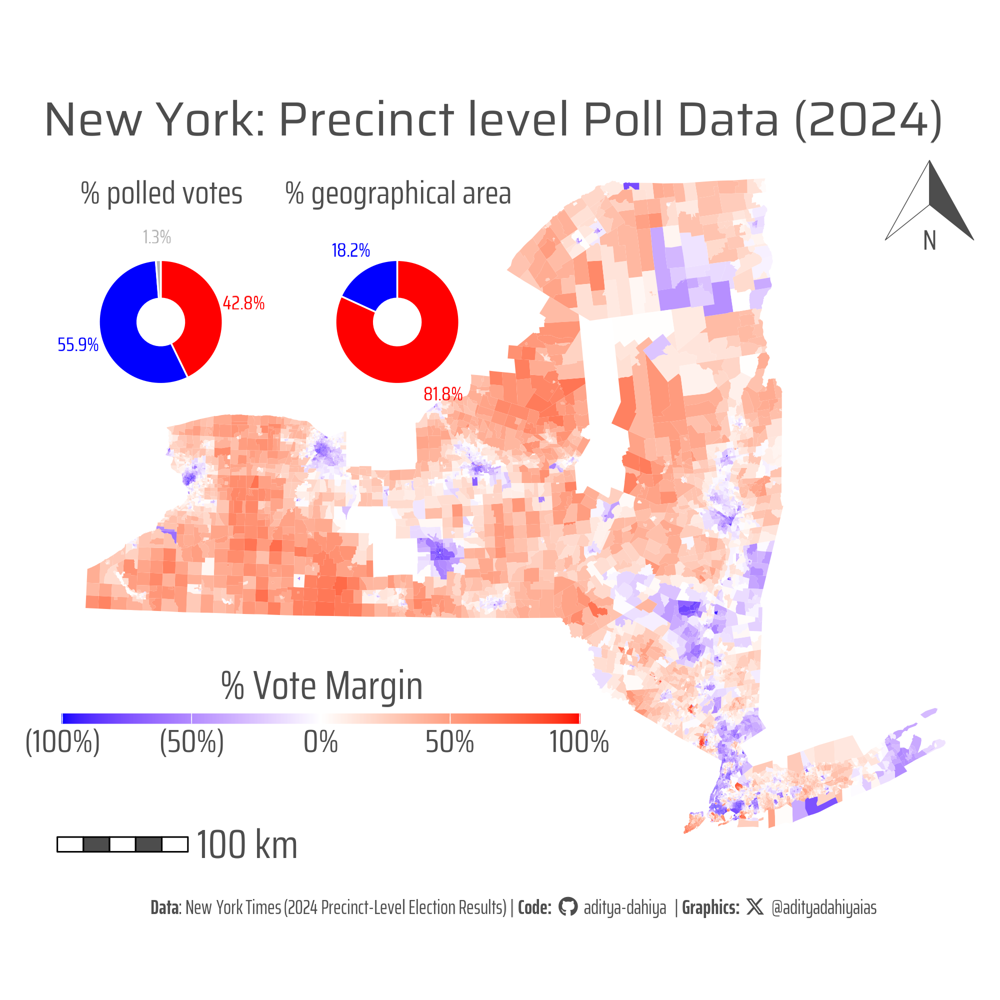

NYT’s Presidential precinct data for the 2024 U.S. general election
R project leveraging election-level data from The New York Times to produce insightful and visually engaging graphics using {ggplot2} and {sf}.
Data Visualization
Maps
USA
{sf}
Gecomputation
Geopolitics
Author
Aditya Dahiya
Published
April 7, 2025
About the Data
This comprehensive dataset compiles detailed, precinct-level results and geographic boundaries from the 2024 presidential election. It integrates official voting records and spatial data as described in the New York Times Election Map Data article and is further enriched by the interactive presentation found in the NYT Election Map Precinct Results. In addition, the GitHub repository maintained by The New York Times provides national-level downloads and detailed documentation, reflecting the robust, transparent approach of their election team.
Loading required packages
Code
# Data wrangling & visualizationlibrary(tidyverse) # Data manipulation & visualization# Spatial data handlinglibrary(sf) # Import, export, and manipulate vector datalibrary(terra) # Import, export, and manipulate raster data# ggplot2 extensionslibrary(tidyterra) # Helper functions for using terra with ggplot2# Final plot toolslibrary(scales) # Nice Scales for ggplot2library(fontawesome) # Icons display in ggplot2library(ggtext) # Markdown text in ggplot2library(showtext) # Display fonts in ggplot2library(patchwork) # Composing Plotslibrary(ggspatial) # Scales and Arrows in Mapsbts =11# Base Text Sizesysfonts::font_add_google("Saira Condensed", "body_font")sysfonts::font_add_google("Saira", "title_font")sysfonts::font_add_google("Saira Extra Condensed", "caption_font")showtext::showtext_auto()# A base Colourbg_col <-"white"seecolor::print_color(bg_col)# Colour for highlighted texttext_hil <-"grey30"seecolor::print_color(text_hil)# Colour for the texttext_col <-"grey20"seecolor::print_color(text_col)theme_set(theme_minimal(base_size = bts,base_family ="body_font" ) +theme(text =element_text(colour ="grey30",lineheight =0.3,margin =margin(0,0,0,0, "pt") ),plot.title =element_text(hjust =0.5,margin =margin(0,0,0,0, "pt") ),plot.subtitle =element_text(hjust =0.5,margin =margin(0,0,0,0, "pt") ) ))# Caption stuff for the plotsysfonts::font_add(family ="Font Awesome 6 Brands",regular = here::here("docs", "Font Awesome 6 Brands-Regular-400.otf"))github <-""github_username <-"aditya-dahiya"xtwitter <-""xtwitter_username <-"@adityadahiyaias"social_caption_1 <- glue::glue("<span style='font-family:\"Font Awesome 6 Brands\";'>{github};</span> <span style='color: {text_hil}'>{github_username} </span>")social_caption_2 <- glue::glue("<span style='font-family:\"Font Awesome 6 Brands\";'>{xtwitter};</span> <span style='color: {text_hil}'>{xtwitter_username}</span>")plot_caption <-paste0("**Data**: New York Times (2024 Precinct-Level Election Results)"," | **Code:** ", social_caption_1, " | **Graphics:** ", social_caption_2 )rm(github, github_username, xtwitter, xtwitter_username, social_caption_1, social_caption_2)
Getting the data
Code
# url1 <- "https://int.nyt.com/newsgraphics/elections/map-data/2024/national/precincts-with-results.topojson.gz"# url2 <- "https://int.nyt.com/newsgraphics/elections/map-data/2024/national/precincts-with-results.csv.gz"# Warning: Almost 1 GB of download# nyt_raw_1 <- st_read(paste0("/vsigzip//vsicurl/", url1))# Save data to disk temporarily to use again during code trial# saveRDS(nyt_raw_1, file = "temp_nyt_election_data.rds")# Read in the pre-saved datanyt_raw_1 <-readRDS("temp_nyt_election_data.rds")
Graphic 1
Beyond the color: A 56%-to-44% vote split becomes 81% red on the map—highlighting how choropleth displays can distort election outcomes by omitting population density considerations.

Figure 1: When map visuals mask reality: New York’s election map shows 81% red despite a 56% vote share for Democrats, underscoring the disconnect between spatial representation and voter turnout. This precinct-level election map of New York State uses a color gradient based on the margin calculated as (Republican votes – Democratic votes) divided by total votes, shading areas red for Republican advantage and blue for Democratic. Despite Democrats receiving 56% of the total vote—as shown in the accompanying pie chart—81% of the map is colored red, highlighting how traditional choropleth maps can mislead by neglecting population density variations. For more detailed data, refer to the NYT Election Map Data and the associated GitHub repository.
Figure 2: This graphic presents two views of the 2024 U.S. Presidential Election results using precinct-level data. The left map is a choropleth showing each state’s winning party—blue for Democrats, red for Republicans—with darker shades indicating larger victory margins. The right map is a non-contiguous cartogram where each state is resized based on its population, highlighting how densely populated (and often Democratic-leaning) states carry more electoral weight. While Republicans dominate in geographic area, the cartogram reveals the demographic strength behind the Democratic vote, illustrating the contrast between land size and population influence in national elections.